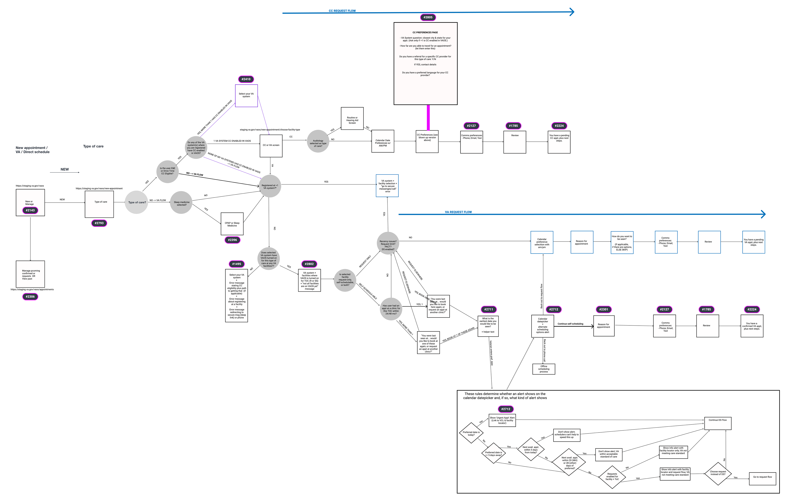
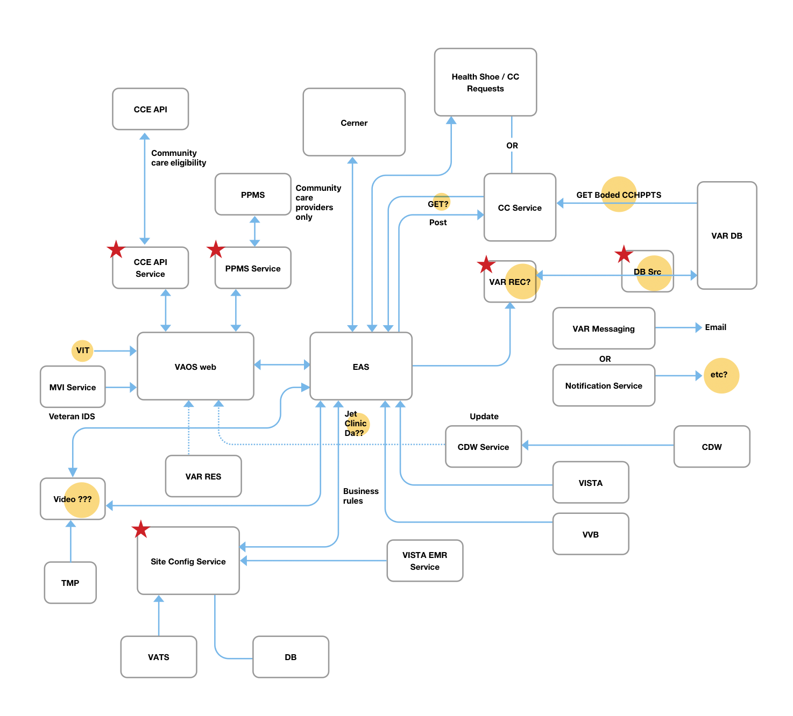
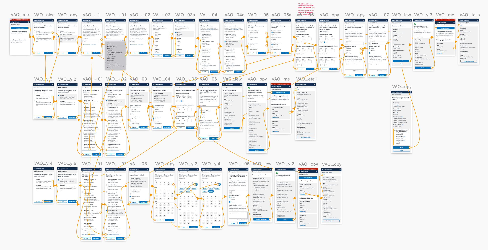
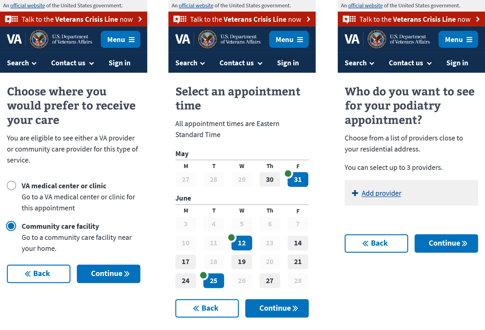
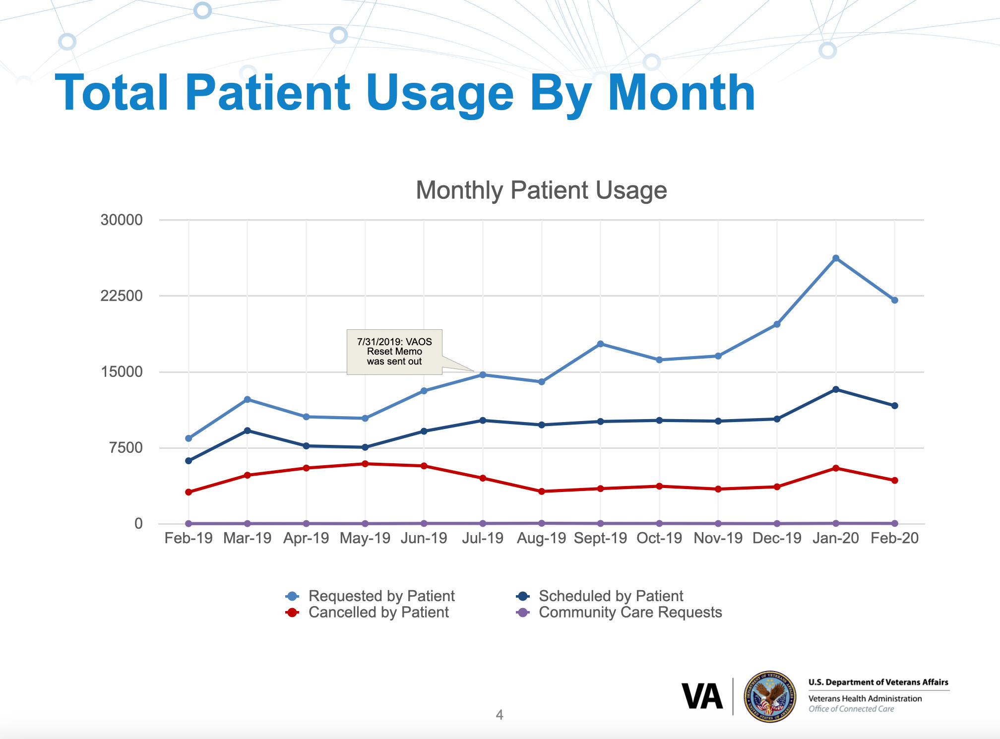
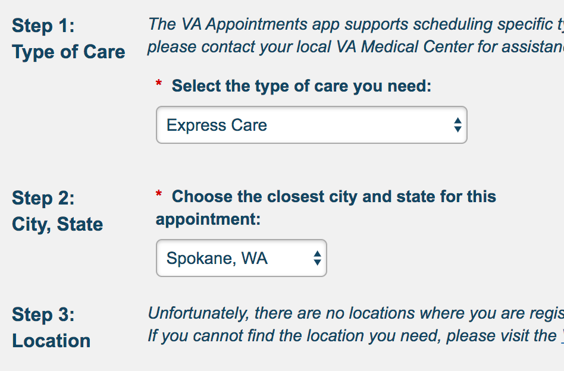
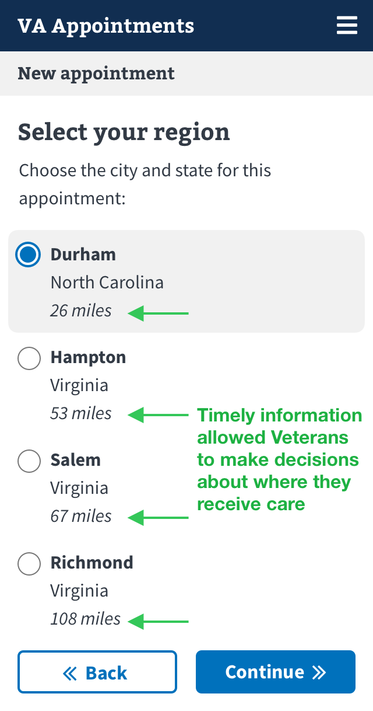

All projects
All projects
Case study: VA Online Scheduling Tool
The problem
VA Online Scheduling Tool (VAOS) is a web utility Veterans use to schedule basic healthcare appointments which lived outside the VA's main website VA.gov. The previous tool didn't use the VA.gov design system, functioned poorly on a mobile phone, required unique login credentials, and most importantly, delivered a broken UX to Veterans. The Digital Modernization strategy issued from VAHQ required that VA online services be on par with their private sector equivalents.
The solution
Migrate the legacy tool onto the new VA.gov tech stack, which allowed other VA.gov pages to easily integrate the tool and use the same login credentials as the rest of the site — VA.gov will be the one stop shop for all Veteran needs on the internet, and VAOS needs to be a part of it.
Design process
Our business goal was to migrate VAOS from a bespoke website into the parent website VA.gov. First, we formed a product strategy to align VA stakeholders from the different arms of VA, which could boil down to 2 main goals: 1/ VAOS will retain all of its current functionality, but will be migrated feature-by-feature, and 2/ it must live wholistically on VA.gov (i.e. use the VA.gov tech stack, design system, etc). In order to achieve these goals, we broke our approach into phases. Phase 1: change nothing about the UX of VAOS, simply skin it with the design system and get an MVP working on VA.gov. This allowed the engineers to focus on functionality (refactoring microservices, login credentials, etc) instead of reworking the entire tool. Phase 2: Once VAOS is up and running, we can slowly start adding more functionality (e.g. Community Care appointments), and reworking the UX to meet best practices and VA.gov standards.
First, I auditted legacy VAOS user flows, grabbing low hanging fruit UX improvements. Some of these improvements would come simply by applying the design system, but many required a rework of conditional logic. As we made these design decisions, we validated their efficacy via usabilty testing and accessibilty audits, and if successful, implemented them in production.
My role
My responsibilities included working with multiple stakeholders to gain alignment on project goals, including getting buy-in from different department heads inside of VA. I worked with contractors and engineers to ensure VAOS would be able to mirror its current functionality, as well as develop a roll out plan for implementation. Additonally, I was responsible for refactoring the legacy tool with the VA.gov design system, which meant crystal clear mockups in Sketch depicting every screen and error state.
Diagraming user flows
Understanding the VAOS backend
Prototype of the first phase of migration
Final design excerpts for VAOS
Impact
Upon migrating onto VA.gov, the VAOS tool saw exponential growth.
A one year snapshot of improvement of VAOS
Before
Users blindly selected a region to receive care.
After
Giving users timely, relevant information to help navigate the complicated VA system.
All projects